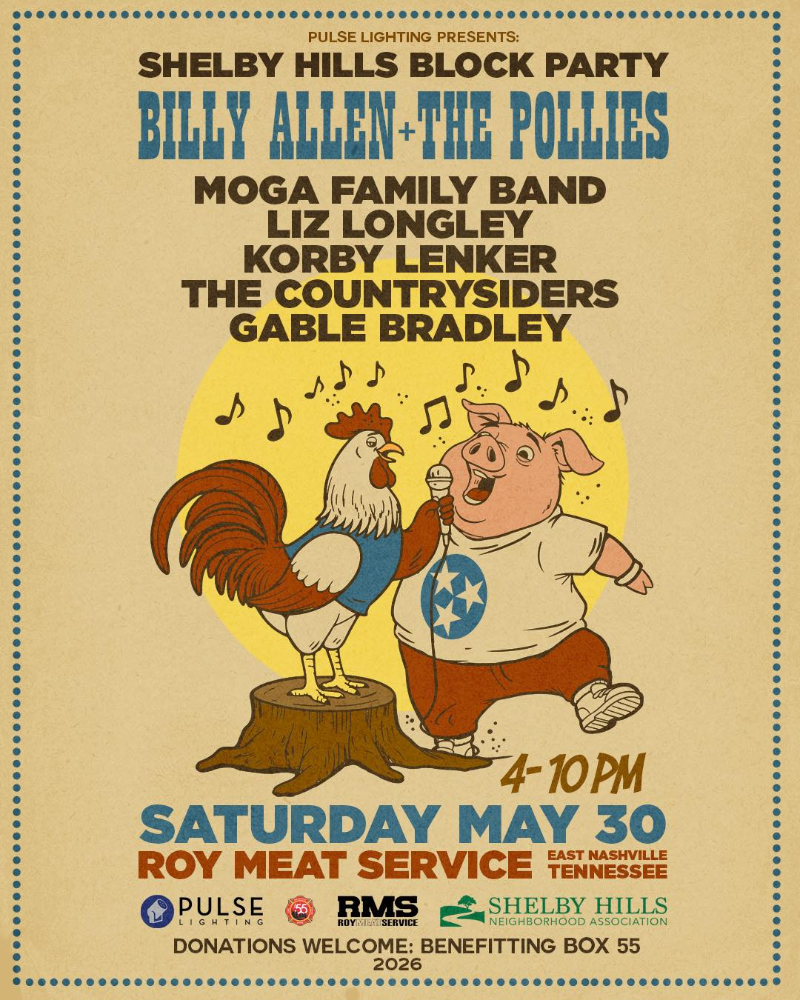

The Meg called me from Nashville on Tuesday.
She was at a butcher shop. She wanted me to know about it. She said the woman at the counter handed her a biscuit while she was waiting on her order and that the biscuit was made that morning by the owner's wife. She said the place smelled like a smoker that had been going for two days. She said there was a hand-drawn poster on the wall with a rooster and a pig in cowboy boots, advertising a block party Saturday.
I asked her what she went in for. She said she didn't remember. She said she'd gone in because she walked by.
Then she sent me three pictures and I had to put my coffee down.
It's called Roy Meat Service. It's on 19th and Long over near Shelby, in East Nashville. Jeff Roy runs it. His wife Christie makes the biscuits at seven every morning. Their families are all over the building.
Here's what I learned, sitting at the kitchen table reading what the Meg sent me. Jeff grew up in Shelby Hills. He learned the meat business from the owner of Nashville Wholesale Meats — a guy who taught him from the floor up. He took what he learned and bought a place called Rick's Market in 2015. Moved his own shop in. About a year later, a fire damaged most of it. He rebuilt. Made the kitchen bigger. He told a reporter once that he sells almost as much prepared food now as he does meat, and that's because the fire taught him what he should've been doing all along.
There's a sign painted on the side of the building that says NASHVILLE STRONG 2020. The Meg sent me a picture of it. I don't know if she meant to. It was just there.
The vegetable recipes are all his mother's. Faye Roy. He said Christie used to be in the kitchen with his mom learning every one of them, while Jeff was outside in the yard with his daddy, Teddy, learning the smoker. So the meat comes from the dad and the vegetables come from the mom and the biscuits come from his wife. The whole family runs through that building, the living and the gone.
He said the East Nashville style of barbecue he learned came from a man named Sam Cantrell, who had a barbecue shack on Lischey Avenue a long time ago. I had to look it up. Cantrell's been gone since I don't know when. But Jeff still cooks the way that man cooked, and so does his pit, and so will whoever Jeff teaches next.
That's the whole thing right there. That's why I had to put the coffee down.
The block party is Saturday, May 30, from four to ten. Right there on Roy's block. They do it every year. The Shelby Hills Block Party — donations go to a firefighter charity, ten bucks at the gate, all ages, cold beer, smoked everything.
The lineup is Billy Allen and the Pollies, Moga Family Band, Liz Longley, Korby Lenker, the Countrysiders, and Gable Bradley. That's six bands I've never heard of and now want to. The poster has the rooster and the pig with a Tennessee tri-star on the pig's shirt, and you can tell from the line work that whoever drew it has been drawing things like that for thirty years.

We're not going. We're not in Nashville. We're at our place in Happy Valley, and Caleb's got the truck up on jacks for the third weekend in a row and Crank's not going anywhere. But if we were down there. If we just happened to be passing through. I'd want to be on that block from four o'clock until they kicked us out.
The other thing the Meg told me — and this is the part Caleb's been talking about ever since I told him — is that Roy's sponsors a kid. Pro Late Model driver out of Franklin, races at the Fairgrounds. Name's Jackson Boone. He's been racing short tracks for years. He's had sponsors come and go. Roy's has been on his car when nobody else was.
Caleb keeps saying that's a real one. He means the kid. He also means Roy.
I think he means both.
I'm putting in an order this week. The Meg's bringing it back. I've never been to the shop and I've never met Jeff or Christie, and I won't this weekend either. But the meat will be in my kitchen by Tuesday, and I'll cook it the way she tells me they told her, and that's about as close as Happy Valley gets to East Nashville.
A small thing, but it's mine now.